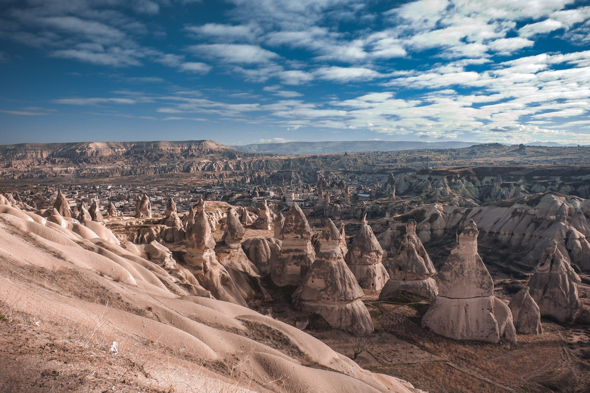

無事地上に降りると、スパークリングワインのサービスと飛行証明書の発行があります。実はカッパドキアは、ワインの産地としても有名なんです。おいしいワインですが、朝から飲みすぎには注意しましょう。
飛行証明書は、日付と自分の名前入りのものがもらえます。旅のいい思い出になりますね！
一生に1度の絶景に出会える！
カッパドキア気球ツアー
トルコの中央アナトリア地方に広がるカッパドキア。「気球ツアー」では、数千年もの歳月がつくりだした自然の神秘を堪能できます。現地で味わった気球ツアーの感動体験をご紹介します！
「キノコ岩」や「ラクダ岩」、「三姉妹の岩」など、珍しい形の大きな岩々で有名なカッパドキア。
これらは、数千年前に繰り返し起きた噴火によって作られた溶岩の層が、長い時間をかけて雨風に浸食されてできたものです。
ギョレメ村を中心に、トルコ観光のハイライトと言っても過言ではありません…！大地いっぱいに広がる褐色の世界は、自然が生み出す神秘を感じさせてくれます。
カッパドキアに行くなら、ぜひおすすめしたいのが「気球ツアー」です！カッパドキアのユニークな風景を上空から堪能できます。

ホテルへのお迎え時間が朝5時ごろとかなり早朝ですが、早起きする価値のある絶景を見ることができます！朝日が昇る前に、気球を膨らませてスタンバイします。早朝はとても寒いのでコートなどの防寒具は必須です！
フルーツジュースやシミット(トルコ風ゴマパン)等の軽食をバルーン会社の方が提供してくれます。上空の気圧の変化で体調を崩さないように、しっかり食べましょう！

日の出とともに、空中散歩のスタートです！
ただ気球で高くに昇るだけではなく、空の上から大きな岩々を見下ろしたり、地上すれすれまで降りて空からでないと入れない場所に行ったり、感動とスリル満点のフライトです♪
朝日に照らされながら浮かぶ気球の景色は、1度見たら忘れられこと間違いなしです。

無事地上に降りると、スパークリングワインのサービスと飛行証明書の発行があります。実はカッパドキアは、ワインの産地としても有名なんです。おいしいワインですが、朝から飲みすぎには注意しましょう。
飛行証明書は、日付と自分の名前入りのものがもらえます。旅のいい思い出になりますね！
気球ツアーが催行される条件は、天気が良く上空の気流が安定していることです。
近ごろ、催行可否の決定権が気球会社からトルコ政府に移り、催行条件も厳しくなりました。1か月のうち3分の1、悪い時では半分ほどはキャンセルになることも。
ただ万が一キャンセルになってしまったら、ツアー代金は返金されます。カッパドキアに連泊するなら翌日に振り替えてもらえるシステムもあるので、ご安心ください！
ですが、せっかく行くならやはりキャンセルは避けたいところ。比較的気候が安定する4〜9月がおすすめです！
最近では、ほとんどのツーリストが気球ツアーを目的にカッパドキアを訪れています。一生に残る経験を求めて、あなたも神秘の地カッパドキアへ行ってみてはいかがでしょうか！